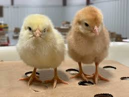

chick < dino & chick > bee
The number 2 is “Bring it home”—vital
for me, deadly for you. See, I am
a chef, full of pluck, using only
the freshest of ingredients.
If I bring you home, it will be
straight to the kitchen.
As of 2023, the global chicken population exceeds 26.5 billion, with more than 50 billion birds produced annually for consumption. Specialized breeds such as broilers and laying hens have been developed for meat and egg production, respectively. A hen bred for laying can produce over 300 eggs per year. Chickens are social animals with complex vocalizations and behaviors, and feature in folklore, religion, and literature across many societies. Their economic importance makes them a central component of global animal husbandry.


The word chicken comes from Old English cicen (pronounced essentially the same as in Modern English). While the origin is Germanic, it is unclear exactly where the word came from, although it could ultimately have come from an imitation of the sound a chicken makes
Chicken can mean a chick, and this was historically the meaning of the word chicken,[18] as in William Shakespeare's play Macbeth, where Macduff laments the death of "all my pretty chickens and their dam".[19] The usage is preserved in placenames such as the Hen and Chicken Islands.[20] In older sources, and still often in trade and scientific contexts, chickens as a species are described as common fowl or domestic fowl.
Water or ground-dwelling fowl similar to modern partridges, in the Galliformes, the order of bird that chickens belong to, survived the Cretaceous–Paleogene extinction event that killed all tree-dwelling birds and their dinosaur relatives
The red junglefowl is well adapted to take advantage of the vast quantities of seed produced during the end of the multi-decade bamboo seeding cycle, to boost its own reproduction.[54] In domesticating the chicken, humans took advantage of the red junglefowl's ability to reproduce prolifically when exposed to a surge in its food supply.
I like H2O
E=mc2
1/2+ 1/2 =1